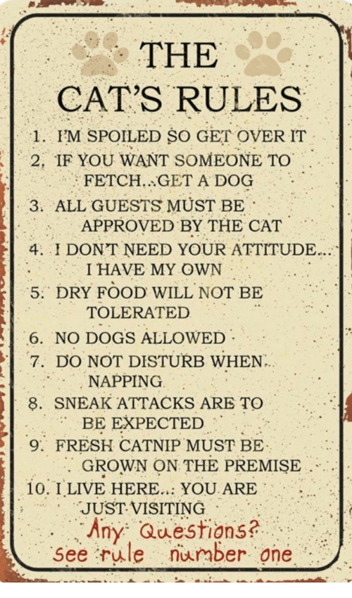

Olethan valmis ottamaan kissan heti vastaan? Emme kykene pitämään kissoja pitkään varattuna. Tutustu kissan luonteeseen hyvin tarkkaan, ja mieti, että onko se sopiva kotiisi. Lisätietoja saat meiltä tarvittaessa. Autamme sinua mielellämme, kun kissa on muuttanut kotiisi, joten voit olla meihin tarvittaessa yhteydessä. Kissan adoptointi meiltä maksaa 100 euroa, mikä kattaa kissan rokotukset ja madotuksen. Tehdessämme kauppakirjan ja luovuttaessamme kissan, vastuu siirtyy välittömästi uudelle omistajalle. Jos kuitenkin kissan kanssa ilmenee ongelmia, toivomme, että kissa palautettaisiin hoiviimme. Jos haluat tietää lisää adoptointimetodeistamme, voit ottaa yhteyttä meihin puhelimitse tai sähköpostitse tai tulla käymään.
